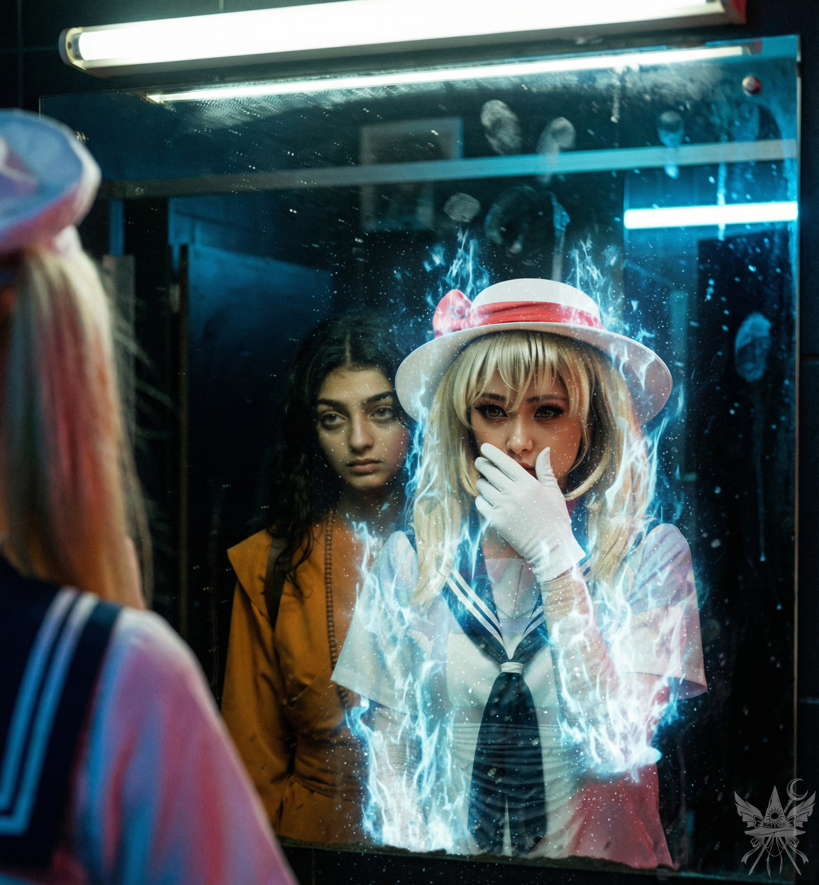

第81章 理想と現実
（また厄介事に巻き込まれそうね……落ち着いて、盤面を整理しなければ）
不敵な笑みを口元に浮かべ、隣の少女へ囁く。
「いい考えがあるわ」
底知れぬ企みを嗅ぎ取ったのか、カナの瞳に昏い好奇心の光が宿る。何を企んでいるのか知りたくてたまらないといった様子で、自然とひねくれた笑みがこぼれていた。
ルイズから前金として受け取ったカルシャパナは、忌まわしい地獄の銅貨とは似ても似つかない。ギザギザの縁取りと古代インド風の精緻な刻印が施された、ずっしりと重い銀貨だ。10枚もあれば当面の資金としては十分で、残りの報酬など端した金に等しい。
スタイリッシュな詐欺師に優雅な一礼を残し、鼓膜を打つ重低音が支配するホールへと舞い戻る。フロアを往来する修行者たちへ品定めするような視線を送る中、カナが喧騒に負けじと声を張り上げてきた。
「どうしてあんな酔っ払いの群れを観察しているの？」
「僧衣がもう一着必要なの。いざという時のために、変身の力は温存しておきたいから」
泥酔した僧侶から衣服を剥ぎ取る――手っ取り早い手段だが、即座に却下した。疑心暗鬼が神経を研ぎ澄ませているせいか、どんな些細な行動も致命的な痕跡を残す気がしてならない。鋭敏な猟犬がいれば、容易くこちらへ辿り着くはずだ。時折、そんな見えない追跡者の気配が幻覚のように付きまとってくる。
（……考えすぎね。今は冷静さを保たなければ）
思考を切り替えようとした矢先、隣を歩くカナが不意に腹を押さえてうずくまった。
「メデア……まずいわ」
「何が？」
「……馬車はカボチャに、馬はネズミに……そしてお姫様は……」
血の気を失った青白い顔で、歯を食いしばりながら呻く。
「……トイレに戻るわよ」
その腕を掴み、小走りで暗い廊下へと引き返した。
重低音が遠くの壁を震わせるだけの、薄暗く淀んだ化粧室。絶えず耳鳴りのように響く蛍光灯のハム音が、密室の閉塞感を煽り立てる。
水垢と石鹸の飛沫で汚れた鏡の前に立つと、カナは苦しげに腹を押さえながら、そこに映る自分自身を凝視した。
鏡のこちら側にある実体は、まだ借り物の少女の輪郭を保っている。しかし、不衛生な鏡面の中では、すでに青白い霊的なノイズがパチパチと火花のように弾け、彼女の真の姿が不気味に浮かび上がり始めていた。冷たく青白い光が、嘘が剥がれ落ちる瞬間のグロテスクな真実を容赦なく暴き出す。

やがて、偽りの姿に細い亀裂が走り、灰色の粉となってパラパラと崩れ落ちていく。頭上に生じた光の輪がみるみる輝きを増し、その眩い光の中から、見慣れた彼女の本来の気配が完全に顕現した。
身に纏った灰を無造作に払い落とし、
「シンデレラ」
は忌々しげに息を吐き出す。
「はあ……変身を維持しすぎるのが、こんなにキツいなんてね」
「街中での解呪にならなくて重畳だったわ。それに、今ここで本来のカナを知る人間はいない。ということは……」
言い終えるより早く、こちらの意図を正確に読み取ったらしい。
「つまり、僧衣は私が調達してくるってことね」
「お願い。一番酔いが回っている者を見つけて、お布施代わりに酒を奢ってあげてちょうだい」
「了解。ふふっ」
喉の奥から、冷酷で悪戯っぽい笑い声が漏れた。人を欺き、玩具にすることへの抵抗感など微塵もない。落ちぶれた酔っ払いをからかう程度の遊戯は、彼女のひねくれた承認欲求を心地よく満たすのだろう。
化粧室の扉が開き、カナが軽やかな足取りで先に出る。数秒遅れて、すでに手に入れていた法衣に身を包んだ状態で後を追った。硬い木製の数珠が指の間でぶつかり合う感触が、ひどく新鮮だ。元来の禁欲的な立ち振る舞いが功を奏したのか、この退廃的な地下クラブには似つかわしくない、完璧な修行者への偽装が完了していた。
バーカウンターでは、呂律の回らない男が一人で管を巻いていた。
「天使の野郎が俺の弟を殴りやがった！ 昨日の晩飯が焦げ付いたのも、夜中に家に押し入ってきたのも、全部あいつらのせいだ！」
空になったグラスを乱暴に叩きつける男の隣へ、カナが滑り込むように腰を下ろし、同情を誘うような相槌を打つ。
「酷い話ね。私も天使は苦手なの。他に何をされたの？」
「靴下を盗まれた！ 服を汚されて、飯に唾を吐かれた！ 高位の存在のくせに、ふざけやがって……げっぷ！」
（天使と戦う前に、自身のアルコール依存症と戦った方が良さそうね）
遠巻きに観察しながら、冷たい視線を送る。
「それから、金も隠されたんだ！ 俺の部屋にあった100カルシャパナ！ 2週間も見つからなかったのは、絶対に天使の陰謀だ……」
「喉が渇いているみたいね。お酒、奢ってあげようか？」
カナが甘く囁きかけると、男は血走った目を丸くした。
「あいつらの仕業だって言ってんだろ……え？ 酒？ 本当にいいのか？」
「もちろん。困っている修行者様のためなら、何だって協力させてもらうわ。マスター、この紳士に一杯！」
無愛想なバーテンダーに銀貨を弾き飛ばし、大量の銅貨と引き換えに三つのグラスを受け取る。男は目の前に置かれた一杯目を一息で飲み干し、焦点の定まらない目でカナを見つめた。
「いや、違う……消えろ、幻覚め……」
「失礼ね。私は本物よ、幻覚なんかじゃないわ」
「余計なこと考えちゃダメだ……俺は……げっぷ……ただ、お前に恩返しをしなきゃ……」
「恩返し？ だったら、その僧衣を貸してもらえないかしら。今どうしても必要なの」
「僧衣？ ああ、もちろん！ お前のためなら何でも脱いでやるさ！」
言われるがままに僧衣を乱暴に剥ぎ取り、男はあっという間にだらしない下着姿を晒した。周囲のテーブルで飲んでいた天使たちが、その滑稽な姿を指差して下品な笑い声を上げる。
用済みとなった男を置き去りにして立ち上がるカナへ、男が情けない声をかけた。
「おい、どこ行くんだ？ 話したかったのに……げっぷ！ 」
「また今度ね。大人しく待っていれば、必ず戻ってくるわ」
息を吐くように嘘をつき、カナは未練ひとつ見せずに化粧室へと戻ってきた。
手早く脱ぎ捨てられたメイド服をリュックサックの奥底へ押し込み、背負い直す。こうして、慎ましい尼僧姿へと変貌を遂げた二人は、市場の裏手へと繋がる通用口から、熱気に満ちた地下クラブを後にした。出口へ向かう途中、身包みを剥がされた下着姿の男の横を通り過ぎると、彼はふっくらとした唇をグラスの縁に押し当てたまま、酷く幸せそうに寝息を立てていた。
地上へ出ると、夕暮れの陽光が白亜の街並みを淡い黄金色に染め上げていた。東南アジアの寺院建築を思わせる仏塔の丸屋根や、精緻な意匠が施された尖塔が視界を埋める。整然と配置された多層的な祭壇や仏像の周囲を、鳩の群れが飛び交っていた。魔界のむせ返るような薬草や食虫植物の生臭さとは対極にある、無機質で乾いた空気。人の背丈ほどもある金色の常香炉から、微かに線香の香りが流れてくる程度だ。くだらない権力闘争さえなければ、この退屈な箱庭も悪くない隠居先になるかもしれない。
黄金色の両開き扉がそびえる正門へ向かいながら、足早に計画を擦り合わせる。まずは魔天使たちの会話を盗み聞きし、龍神島への渡航手段を探ること。門周辺に大天使ミカエルの気配はない。どうやら入市時のみ現れる検問システムのようだ。
標的が姿を現すまでの手持ち無沙汰な時間を利用し、箒に頼らない飛行の訓練を開始する。第七チャクラから第一チャクラへ魔力を逆流させ、ジェット噴射の要領で身体を浮揚させる理屈だ。背骨に沿ってエネルギーチャネルを循環させる感覚には慣れている。意識を集中させると、足元の乳白色の雲海からふわりと身体が離れた。隣には軽やかに宙を舞うカナが付き従い、高度が落ちかけると、すかさず腕を掴んで引っ張り上げてくれる。眼下には、果てしなく続く雲の海が広がっていた。
「これなら、あの子が外の世界へ出たがった理由も頷けるわ」
青白い光に包まれた退屈な地平を見下ろし、ぽつりとこぼす。
「ええ。風も吹かず、肌を刺す日差しも、恵みの雨もない。そもそも、この空に嵐は来るのかしら」
「嵐が好きなの？」
「冷たい風がすべてを洗い流し、世界を無に還す。創造には破壊が必要。それが人生の摂理よ」
凪いだ声で紡がれる破滅的な詩を背に受け、さらに視線を遠くへ投げる。
「今朝、奇妙な夢を見たの。『サーバー室』のような空間。そこには全人類の魂のデータが記録されていて、誰がいつ生まれ変わったのか、個人番号まで完全に管理されていたわ」
「不吉な夢ね」
カナの眼差しから、戯れの温度が消え失せた。
「なぜ？」
「もしそれが預言なら、閻魔は番号さえ把握すれば、誰でも容易く狩り出せるということよ。極めてまずい状況ね」
「つまり、私たちがこうして自由に歩き回れているのは、単に計画が漏れていないからに過ぎない。より慎重に動く必要があるわ」
「それよりも、どうにかしてそのデータベースに接続したいわね。根拠のない夢なんて信じないから」
少しの沈黙の後、カナの知性の出所について探りを入れる。
「そういえば、随分と機械に明るいのね。私が図書館やインターネットで学んだと言った時も、何も疑問を抱かなかった。幻想郷の出自でありながら、どうして？」
「ふん……幻想郷の住民は皆、世間知らずの田舎者だとでも？ 外界の品を扱う店で、色々な文献を読み漁ったのよ。そこの店主なんか、コンピューターを外界の人間が使う『式神』の一種だと思い込んでいるわ。滑稽でしょう？」
「式神、ね。高度に発達した技術は魔法と区別がつかない。あながち間違った解釈でもないわね」
そろそろ刻限だ。城壁の影に溜まった厚い雲をかき分け、身を潜めるための塹壕を作る。粘土のように自在に形を変える雲海に身を沈め、門の至近距離に陣取った。カナは少し離れた高台から全体の監視に回る。
息苦しいほどの静寂。風切り音も、水音も、虫の羽音すら存在しない、死んだような空間。ルイズの情報を信じて雲の隙間から門を睨み続けるが、予定の時刻を過ぎても標的は一向に姿を見せない。
微かな焦燥が胸を焼き始めた頃、ついに魔天使の部隊が無言のまま門を通過し始めた。冷酷で高圧的な態度は影を潜め、ひどく沈んだ足取りだ。ポータルへ消えかける直前、かろうじて会話の断片が耳に滑り込んだ。
「……新しい世界に行きたかった……」
「オリーブのパイも、食べてみたかったのに……」
「魔界の天気ったら、いつになったら晴れるんだろう……」
それきり、空間は再び無音に閉ざされた。
標的がポータルへ完全に消え去ったのを見計らい、隠れ場所から身を起こす。すぐさまカナが歩み寄ってきた。
「何か拾えた？」
「新しい世界へ行きたかった、と。あとは天候への不満ね」
「ええ、私も聞いたわ。魔界はまだ荒れ狂っているようね。あの陰気な灰色の空のままなら、帰りたくなくなるのも当然だわ」
「天候が神綺の精神状態と連動しているのなら、彼女はまだ塞ぎ込んでいるということね」
カナはふと立ち止まり、地平の彼方へと視線を投げた。
沈みゆく太陽が、彼女の顔の輪郭や銀白色の髪の毛先を鋭い黄金色で縁取っていく。一方で、こちらに向けられた顔の半分や、纏っている分厚い黄土色の法衣は、夜を孕んだ空の冷たい青紫色に沈み込んでいる。肌を刺すような高高度の冷気と、夕日の直接的な熱量。その劇的なコントラストの中で、凪いだ水面のような無表情の奥に、ギリギリの理性で押さえ込まれた重たい執着が渦巻いているのを感じ取った。
「心をあんなにもてあそんで、本当に良かったと思っているの？」
冷ややかな声が、極低温の乾燥した空気を震わせた。
「……何の話かしら」
「自分の目で見たでしょう？ あんなにも優しく、本当の母親のように愛してくれたのは、生まれて初めてだったのに。あなたが全部ぶち壊したのよ」
法衣の首元に掛けられた木製の数珠が、カチリと乾いた音を立てる。どこか遠くを見つめたまま、琥珀色の瞳は瞬きすらしない。
「まあいいわ。あなたはあなたの目的のために動いただけ。私も同じよ」
「愛してくれた、ですって？ 嘘や欺瞞の上に成り立つものを、私は愛とは呼ばないわ」
「はあ？ あなたに愛の何が分かるというの？」
カナはついに視線をこちらへ戻し、見下すような嘲笑を浮かべた。
「愛なんて、嘘で塗り固められた幻想に過ぎない。相手を理想化して自分を騙し、相手の理想に合わせて自分を偽る。その繰り返しよ」
「ならば、理想化などやめればいい」
「そんなことをしたら、愛なんて跡形もなく消え失せてしまうわ」
黄金色の光を背負ったまま、カナは一歩だけ距離を詰める。その声には、単なる哀愁ではなく、いつ爆発してもおかしくない致死量の静寂が孕んでいた。
「たとえばね。私はいつも、メデアのことを最高だと自分に言い聞かせているの。だって……そうじゃなくなったら、メデアのことを憎んで、最後には殺してしまうもの」
「……それは脅迫？ それとも、愛の告白かしら」
「ただの事実よ。それが私の生き方」
＊＊＊
図書館の文献から書き写した簡素な地図によれば、龍神島は有頂天市から見て東の方角に位置しているはずだった。しかし、行く手には厚い雲が立ち込め、島影はおろか地平線すら曖昧に霞んでいる。上空を行き交う飛行船の航路も、目指す方角からは大きく逸れていた。
空中を飛ぶことは可能だが、想像以上に魔力の消耗が激しい。仕方なく愛用の自転車を取り出してみたものの、綿菓子のように柔らかく頼りない雲の地面では、タイヤが空回りするばかりで一向に前へ進まなかった。苛立ちながらペダルを踏み込む頭上を、カナが軽やかに舞う。時折、彼女が纏う黄土色の法衣の裾が、からかうように顔を掠めていった。その物思いに沈んだような横顔を見上げていると、かつて彼女が口にした「自分が何者かわからないまま生きてきた」という空虚な響きが、不意に脳裏をよぎる。
「私が運んであげようか？」
カナがふわりと隣に降り立ち、手を差し伸べてきた。
「ええ、お願い。雲の上じゃ、この自転車はただの鉄屑だわ」
彼女に腕を支えられながら空中に留まるのは、ひどく不安定で骨が折れた。しかし、次第に魔力制御のコツが掴めてくる。
（……なるほど。速度を上げるほど、第七チャクラから強引に魔力が吸い上げられる。まるで車のエンジンがエアインテークから大量の空気を吸い込むような感覚ね）
東へ広がる雲は、実際には無数の島々が浮遊する広大な海だった。その中でひときわ高くそびえ立つ島は、足元の雲の陸地からさらに一キロメートルほど上空に位置している。振り返ると、有頂天市の白亜の街並みは、すでに地平の彼方へ完全に霞んで消えていた。
魔力の回復を兼ねて、手近な小さな島で休息を取る。地面は下層の雲と同じ物質で構成されていたが、さらに柔らかく、身体が沈み込まないよう横たわる必要があった。背後では巨大な雲の塊の向こうへ太陽が沈みかけ、周囲は急速に青黒い影に飲み込まれていく。
「もうすぐ、星屑が舞い散るわ……ねえ、見て。なんて綺麗なの。この冷たさと空虚さ……たまらない」
沈みゆく光を見つめながら、カナがうっとりとした吐息を漏らす。その場の静寂と死に絶えたような美しさに、心の底から酔いしれているようだった。
「この景色、目に焼き付けておくわ。嵐が来る……もうすぐね」
冷たい風の予感に、静かに、しかし力強く応じた。
目的の島の頂上へ降り立った瞬間、思わず息を呑んだ。
創造主の居城にふさわしい威容を誇る龍宮が、眼前にそびえ立っていたからだ。朱塗りの太い柱と、鮮やかな緑色の瓦屋根が幾重にも重なる多層建築。それは東南アジアの仏塔とは異なる、中華あるいは琉球の空気を色濃く漂わせている。
「着いたわね。これで私の〝天才的〟な計画もここまで。あとは？」
自嘲気味に呟くと、カナもつられたようにクスクスと笑い声を上げる。
「さっきは戦略がないって文句を言っていたじゃない。立派な仏の衣を着ているんだし、このまま宮殿に突撃よ！ あとは……成り行きで！」
冷たい夕闇が重いベールとなって辺りを包み込むにつれ、龍神島特有の、水気を含んだ重たく湿った夜気が肌にまとわりついてくる。足元の柔らかな雲は、いつの間にかどこまでも続く、滑らかで真っ白な敷石へと変わっていた。
幻想的な曲線を描く花壇には色鮮やかな低木が植えられ、大きな黄色の葉が音もなく舞い落ちる。ベンチが設えられていたが、腰を下ろす余裕などない。
ふと、ひときわ高くそびえる塔の一つに視線が引き寄せられた。空を這うように何かが動いている。
「見て、龍よ！」
カナの低い声と同時に、茂みの陰へと反射的に身を滑り込ませた。
大型犬ほどのサイズをした、薄紫色の小さな龍――仔龍が、軽快に羽ばたきながら塔の周囲を飛び回っている。まるで新しい玩具を与えられた子犬のように無邪気な動きだ。
「風太！ もう遅い時間です。お部屋に戻りなさい！ 風太！」
朱塗りの城壁の向こうから、厳格でありながらどこか世話焼きな響きを帯びた、大人の女性の声が響き渡った。
しかし、風太と呼ばれた仔龍は遊びを止める気配を見せない。次の瞬間、塔の小さな窓から仔龍めがけて、青白い稲妻のような球電が放たれた。仔龍はそれを軽々と身をよじって躱す。日常的な鬼ごっこを楽しんでいるかのようだ。
「衣玖さん、もうちょっと！」
人間のわんぱくな少年そのものの、生意気で楽しげな声が空から降ってくる。
「風太、聞こえませんでしたか？ こんなに遅くまで飛び回っては駄目ですよ！」
女性の声が一段と厳しさを増す。
「だって、僕はいつもどこにも飛んじゃいけないんだもん！」
深く重い紫色の夜空を背景に、塔の窓から高彩度の暖かなオレンジ色の光が漏れ出している。軒下に吊るされた提灯はまだ暗い。
開け放たれた窓枠から、凛とした気品を漂わせる女性――永江衣玖が、夜の冷気の中へ身を乗り出した。彼女の腕から放たれた螺旋状の羽衣が、激しい青白いスパークを散らしながら鞭のようにしなり、宙を舞う仔龍を絡め取ろうと襲い掛かる。物理的な強制力と電撃を伴った、有無を言わせぬ愛の鞭だ。

鋭い電撃の軌道に驚いたのか、風太は慌てて近くの塔へ飛び込み、シャッターを乱暴に閉めた。勢い余って少し隙間が空いているのが酷く子供らしい。
衣玖は小さく息を吐き出すと、騒動などなかったかのような優雅な身のこなしで正面玄関へと降り立ち、開け放たれた扉の奥へと静かに消えていった。
「ねえ、メデア。考えていること、同じでしょ？」
暗がりに潜んだまま、カナが耳元で悪辣な囁きを落とす。
「あの仔龍を誘拐する気？」
「誘拐っていうか……有頂天市に連れ出して隠して、後で親を脅迫するのよ。手強そうなら気絶させればいいわ。一人が風太と遊んで時間を稼いでいる間に、もう一人がこっそり襲撃する。できれば彼岸まで連れて行きたいけれど……」
呆れ果てて、深く重い感嘆の息を漏らした。
「相変わらず正気じゃないわね。まあ、覚悟の上で付き合っているけれど……もし牙を剥くのが仔龍じゃなくてあの衣玖だったらどうするの？ あの雷使いに正面から勝てると思っている？」
カナは悪びれもせず、楽しそうにクスクスと笑う。
「衣玖の気を逸らせばいいだけよ。それとも、正々堂々謁見を願うつもり？ 有頂天市が騒がしいこととか、龍神の石像破壊が閻魔の陰謀だとか吹き込んで？ 緊急事態だって騒いだところで、きっと取り合ってくれないわよ」
「……」
「つまらないわ。それに意味がない。ちび龍を人質にする方がよっぽど効果的よ！」
「うーん……確かに、一理あるわね」
冷徹な計算式に、彼女の狂気じみた提案を組み込んでみる。
「ねえ、宮殿に忍び込んで情報収集するのも手よ？ 龍神に関する面白いネタが見つかるかもしれないし、後で強烈な弱みを握れるわ」
「そうね。でも、もう完全に日が暮れる。早く決めないと」
湿り気を帯びた龍神島の夜風が、二人の思惑を覆い隠すように吹き抜けていった。